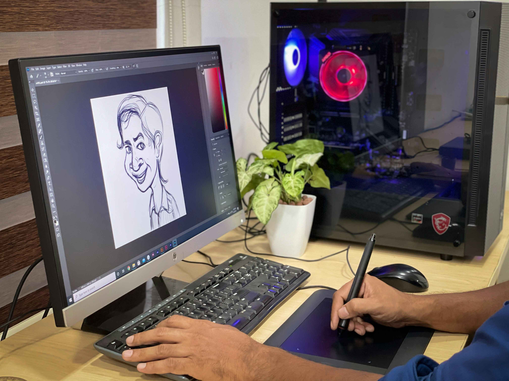

Skills including HTML/CSS, responsive web design, WordPress, Javascript, and MySQL.
Drawing potrait pictures, logo and banners, using ClipStudio, Abobe illustrator and Procreate.
Skills include Design Thinking, Low & High Prototypes, and Testing, mainly using Figma.
My journey began with a love for video games. Spending hours immersed in various games on my computer, I discovered an early fascination with how games were created and dreamed of developing my own one day.
As a kid, I was constantly drawing, whether it was graffiti-style sketches on paper or creative artwork in notebooks and other surfaces I could find. My creativity flourished in these early years, forming the foundation for my later work in digital media.
When the world slowed down during the COVID-19 pandemic, I took the opportunity to learn digital drawing with Clip Studio and Adobe Illustrator. I practiced creating portraits, logos, and banners, even managing to make some savings through commissions. This period solidified my commitment to combining my technical skills with my artistic passion.

Now, I’m studying Interactive Media Development at Camosun College, a field that lets me bring together my love for programming and digital art. This program aligns perfectly with my interests and skills, setting me on a path to create impactful, interactive media.
I'm Min Mon, a 21-year-old Interactive Media Development student with a passion for blending creativity with technology. Currently, I’m studying at Camosun College, where I’m refining my skills in programming, interactive design, and multimedia technology. I aim to bridge the worlds of art and interactivity, using both traditional and digital skills to create impactful user experiences. Driven by curiosity and adaptability, I’m continuously seeking opportunities to innovate and bring ideas to life in the digital landscape.